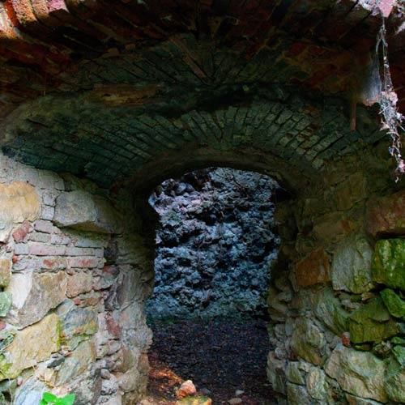

Visita · Gualba
Al centre del terme, al costat d'un camí, hi ha el forn de calç de la Manera , també dit forn d'en Figueres. És una construcció amb volta de mig punt feta a plec de llibre, i la pedra s'hi abocava…